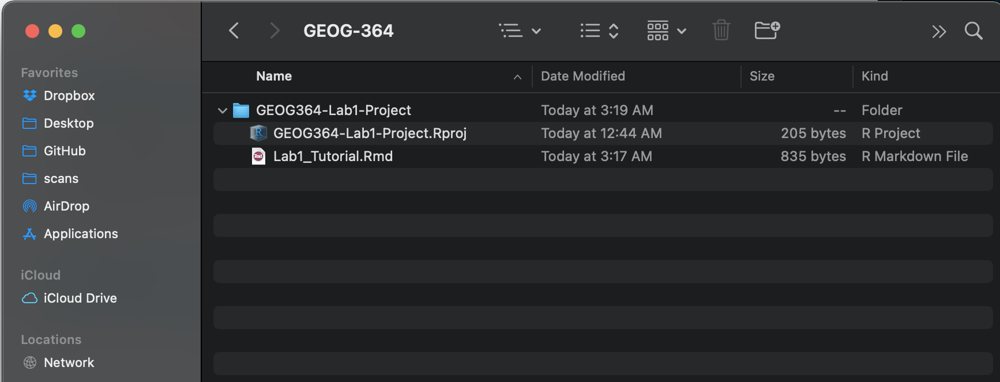
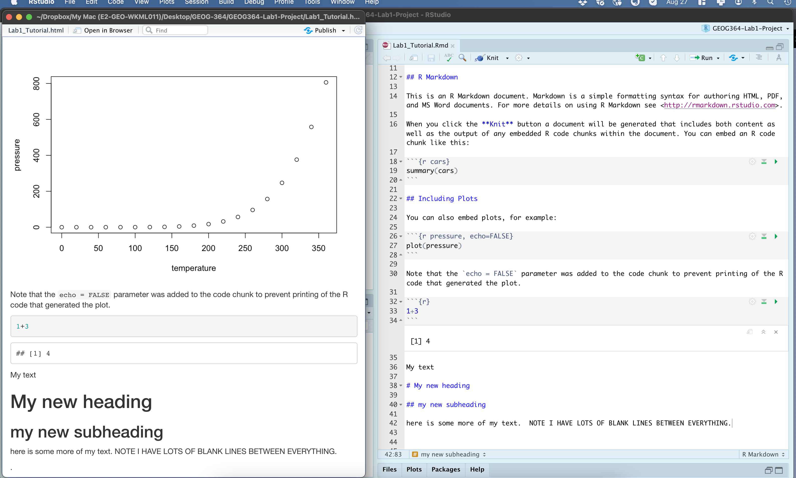

Tutorial 5: R-Markdown
GEOG-364 - Spatial Analysis
R-Markdown Basics
What is R-markdown?
As I said at the start, the console is like a phone call to the computer, you’re talking but you’re not keeping records of what you say (you can always press the up key to see previous commands but that’s about it). When you close R, everything you have done will be lost.
What we need instead is a way to save the commands for future use - we can do this using scripts. There are several types of document, or script that you can create and save in R-Studio.
A basic script (the filetype is .r). This is simply just a blank notepad where you can save code commands. When you “run” the commands in the script, R simply copy/pastes the commands over to the console.
An R-Notebook or R-Markdown document (the filetype is .Rmd). These are very cool - and are how I wrote this lab book. This is what we will be using in our labs.
Imagine a normal Microsoft Word document, but halfway through you can press a button and a mini R console appears. You type your code inside the mini console, it runs and puts the plots/output just below - then you leave the console and continue writing about the results. Essentially you never have to take another screenshot of results and move it to your output…
Rmd files are also flexible. You can turn them into reports, websites, blogs, presentations or applications with a few short commands.
In this course we are going to focus on the R-Markdown format and you are going to submit your labs as websites/html files.
Creating a markdown document
Time to make your own. Go to the File menu on the top left, then click New File - R-Markdown. It will ask you to name and save your file. Call it Lab1_Tutorial. A new file should appear on your screen, save it as Lab1_Tutorial INSIDE YOUR LAB 1 FOLDER.

The new file on your screen is your first markdown script. Essentially, we have some space for text, some space for code, and a space at the top of the file where we can add information about themes/styles etc.
Your file contains some friendly text to explain what is going on, which I have annotated here. Read the file and see what it says.

Code chunks
Your mini-consoles are the grey areas. They are called “code chunks”. Click on the little right triangle arrow at the top-right of the code chunk, this will run all of the commands in that code chunk and put the results underneath.
Try running the 3 code chunks in your document (the top one will do nothing).
To see what this will become, click the “knit” button.. and your code will produce a website! This will pop up on your screen. Close that and look at your lab 1 folder - you will see a html file has appeared. Double click to open in your browser.
Code chunks can be altered. For example, on line 19, delete summary(cars) and type 1+1. Now press the green arrow and the new answer should appear directly under your code chunk.
Text editing
Now click in the white space at the end of the script, press enter a few times (around line 33) and press the green insert button (top right near the Run button). Insert a new R code chunk. Inside, type 1+2 and run it.
Below the output, in the white space, click and press enter a few times,
Now make a new heading by typing # my new heading IN THE WHITE SPACE (this isn’t coding in R, this is just editing your word document.)
Below that leave some white space and write some more text. Press knit again and all your changes should have been incorporated.

Congratulations! You have reached the end of the first set of tutorials. Now you are ready to start Lab 1…
Website created and maintained by Helen Greatrex. Website template by Noli Brazil